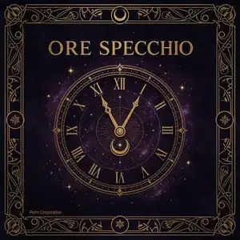

Ore Specchio: Significato, Origini e Sincronicità

Cosa Sono le Ore Specchio e la Teoria della Sincronicità
Le ore specchio sono quegli orari in cui ore e minuti mostrano le stesse cifre — come 01:01, 11:11, 22:22 — creando una perfetta simmetria sul quadrante digitale. Il termine nasce dall'immagine dello specchio: un numero che si riflette identico su sé stesso. Secondo la tradizione numerologica e angelica, questi momenti non sono casuali: il fatto che tu stia guardando l'orologio esattamente in quell'istante è un atto di sincronicità, il termine coniato dallo psicologo svizzero Carl Gustav Jung negli anni '20 per descrivere coincidenze significative che sfidano la spiegazione puramente statistica.
La pratica di interpretare le ore specchio affonda le radici nella numerologia angelica, sviluppata e diffusa a livello globale dagli anni '90 in poi soprattutto grazie ad autori come Doreen Virtue, e si intreccia con la tradizione cabalistica dei 72 angeli (Shem HaMephorash), secondo la quale ogni segmento di tempo del giorno è governato da un angelo specifico che presiede a quella vibrazione energetica. Jung descrisse la sincronicità come una "coincidenza di significato": due eventi separati che non hanno causa comune, ma che si incontrano in un punto di senso condiviso per chi li osserva.
🔑 La domanda non è "è possibile che sia un caso?" — statisticamente lo è. La domanda è: "cosa sento in questo momento?" Le ore specchio funzionano come un promemoria cosmico che ci invita a fare una pausa e a prestare attenzione alla nostra vita interiore.
Guardare l'orologio è un atto fisico ordinario; il momento esatto in cui lo facciamo, però, è determinato — almeno in parte — dalla nostra attenzione sottile, da quello che in molte tradizioni viene chiamato intuizione, angelo custode o Sé Superiore. Non serve credere letteralmente in entità angeliche per trarre beneficio dalla pratica: anche da un punto di vista puramente psicologico, fermarsi un istante a notare un orario simmetrico è un piccolo rituale di consapevolezza che riporta l'attenzione al presente, spesso in un momento di passaggio o di decisione importante.
Guida a Tutte le Ore Specchio
Tocca un orario per visualizzarne immediatamente il messaggio completo nel calcolatore qui sopra.
Le Ore Maestro: 11:11 e 22:22
Tra tutte le ore specchio, 11:11 e 22:22 hanno un'intensità massima (11/11) perché corrispondono ai Numeri Maestro della numerologia. Sono i due orari più segnalati e più attesi dalle persone sensibili ai messaggi spirituali.
👼 11:11 — La Porta degli Angeli
L'11:11 è universalmente riconosciuto come la firma degli angeli nel tempo, il momento in cui il velo tra il mondo materiale e quello spirituale è più sottile. Non è un caso che sia diventato simbolo globale di risveglio spirituale: milioni di persone nel mondo lo segnalano come momento di svolta nella propria vita.
L'angelo associato è Lauviah, e l'arcangelo è Uriel — il portatore della luce divina. Vedere 11:11 è un invito a fermarsi completamente per un minuto, ascoltare in silenzio e, se lo si desidera, esprimere un'intenzione sincera.
🕯️ Rituale 11:11: scrivi un messaggio a qualcuno che non c'è più, o a una versione futura di te stesso. Tienilo in un luogo sacro. La scrittura in questo momento ha una carica intenzionale straordinaria.
🏗️ 22:22 — Il Maestro Costruttore
Il 22:22 porta la vibrazione del Numero Maestro 22 — il Maestro Costruttore. È il messaggio dell'universo che dice: le tue visioni più grandi sono realizzabili. Non è il momento di sognare in piccolo. L'angelo Yeiayel e l'arcangelo Zadkiel governano questa ora.
Chi vede spesso 22:22 è spesso in un momento di costruzione di qualcosa di importante — una carriera, una relazione, un progetto di vita. L'universo conferma che il lavoro che stai facendo ha basi cosmiche solide.
Numeri Maestri, Tarocchi e Uso Pratico delle Ore Specchio
Oltre a 11:11 e 22:22, ogni ora specchio della seconda metà del giorno (13:13–23:23) condivide la propria struttura numerologica con un Arcano Maggiore dei Tarocchi: 13:13 con la Morte, 16:16 con la Torre, 17:17 con la Stella, 19:19 con il Sole, 21:21 con il Mondo. Questo non è casuale: i venti due Arcani Maggiori e i ventiquattro orari del giorno condividono un'origine simbolica comune nella numerologia occidentale, dove ogni cifra da 0 a 9 porta un archetipo psicologico ricorrente che si ripete amplificato nei numeri composti.
L'errore più comune di chi si avvicina per la prima volta alle ore specchio è considerarle un oracolo deterministico, come se dicessero esattamente cosa accadrà. In realtà funzionano meglio come uno specchio, appunto: riflettono lo stato interiore di chi le osserva nel momento in cui le nota. Un altro mito da sfatare è che vedere spesso la stessa ora specchio sia "più potente" di vederla una volta sola — la frequenza non è una scala di intensità, è semplicemente un invito a prestare più attenzione a quel tema specifico nella propria vita.
Ore Inverse e Palindrome
Oltre alle ore specchio classiche, esistono due categorie speciali di orari significativi.
Ore Inverse
Sono orari in cui i minuti sono il rovescio delle ore: 01:10, 02:20, 03:30. Indicano qualcosa che emerge dall'inconscio verso la coscienza — un processo in corso, una comprensione che sta maturando. Il messaggio è: pazienza, la chiarezza sta arrivando.
- 01:10 🌱 — Intuizione Nascente. Nuova comprensione in gestazione.
- 02:20 🌊 — Partnership in Evoluzione. Una relazione sta maturando.
- 03:30 🎭 — Creatività in Gestazione. Un progetto sta nascendo in silenzio.
Ore Palindrome
Sono orari che si leggono uguali in entrambe le direzioni: 12:21, 10:01. Portano il messaggio del rispecchiamento totale — quello che sta accadendo fuori è il riflesso esatto di quello che sta succedendo dentro.
- 12:21 🪞 — Rispecchiamento Totale. Cambia l'interno e l'esterno seguirà.
- 10:01 🔄 — Ritorno all'Origine. Stai tornando a qualcosa di essenziale con nuova saggezza.
Gli Angeli Custodi nelle Ore
Nella tradizione angelica ebraica e nella cabala, ogni ora del giorno è governata da un angelo specifico. Quando vedi un'ora specchio, l'angelo associato a quell'ora è particolarmente vicino e reattivo alle tue intenzioni.
| Ora | Angelo | Arcangelo |
|---|---|---|
| 00:00 | Nemamiah | Metatron |
| 01:01 | Elemiah | Raffaele |
| 02:02 | Jeliel | Gabriele |
| 03:03 | Sitael | Uriel |
| 06:06 | Lelahel | Raffaele |
| 07:07 | Achaiah | Zadkiel |
| 08:08 | Cahetel | Metatron |
| 11:11 | Lauviah ✦ | Uriel ✦ |
| 17:17 | Lauviah II | Gabriele |
| 19:19 | Leuviah | Raffaele |
| 22:22 | Yeiayel ✦ | Zadkiel ✦ |
Per approfondire la tradizione angelica — i 72 angeli della cabala, i numeri angelici (111, 333, 444…) e i messaggi dei numeri ripetuti — esplora la sezione Angeli Custodi su MYSTICA.